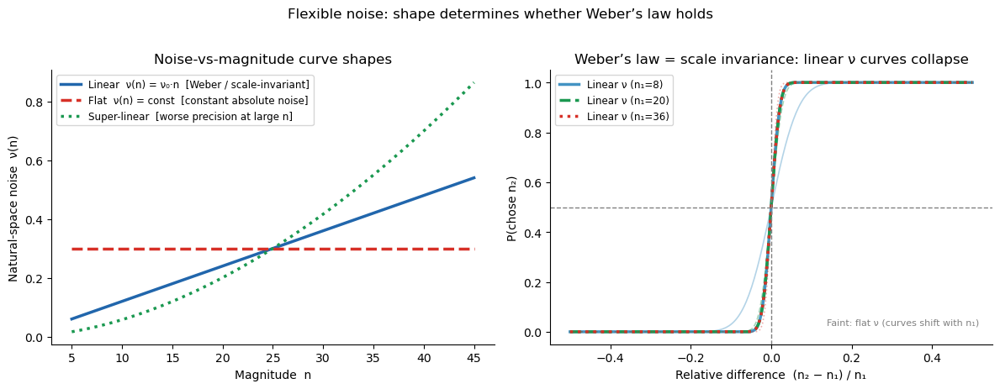
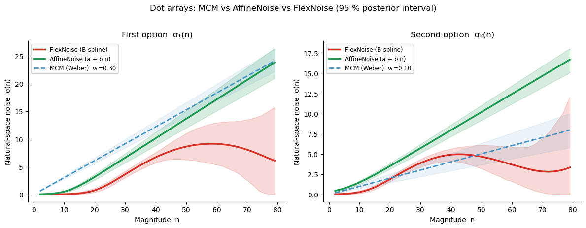
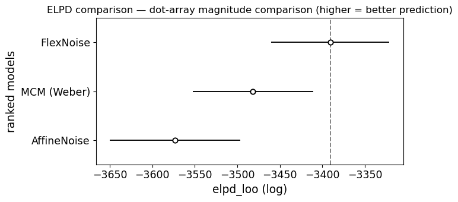
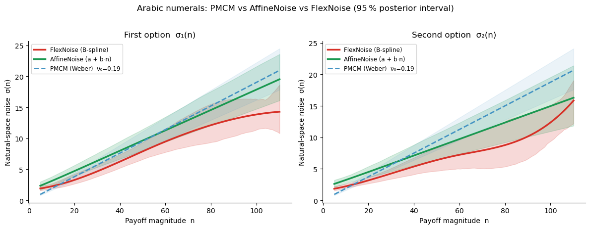
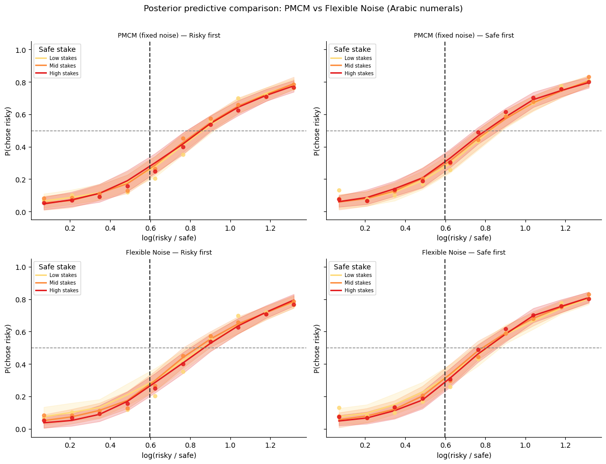
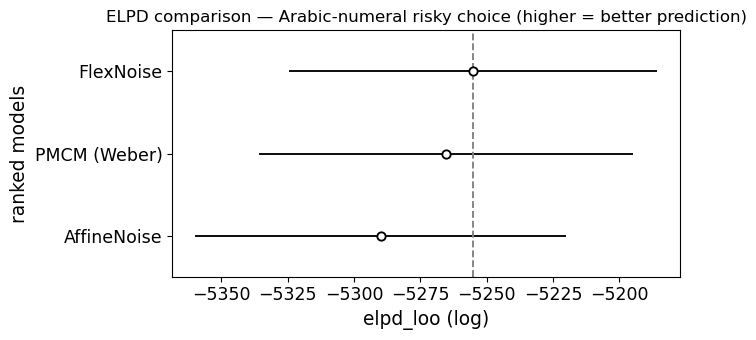

Lesson 4: Flexible Noise Curves — FlexibleNoiseComparisonModel and FlexibleNoiseRiskModel¶
Motivation: when does Weber’s law hold?¶
The log-space models from lessons 2–3 (MCM, PMCM) assume that the internal representation of magnitude follows Weber’s law: noise scales proportionally with magnitude, \(\sigma(n) \propto n\). This is a good description for perceptual stimuli such as dot arrays, where numerosity is read off directly from visual input.
But what about symbolic numerals? When participants see the digit \u2`01c47:nbsphinx-math:u2`01d, the noise on their internal representation need not scale the same way. The Flexible Noise models let the data reveal the actual noise-vs-magnitude curve rather than assuming it in advance.
The key difference from the log-space models:
Model |
Evidence space |
Noise \(\nu(n)\) |
Weber’s law |
|---|---|---|---|
MCM / PMCM |
log \(n\) |
fixed scalar \(\nu_\text{log}\) |
\(\sigma_\text{nat}(n) = \nu_\text{log}\!\times\!n\) (linear) |
AffineNoise |
\(n\) (natural) |
\(\text{softplus}(\beta_0 + \beta_1 \hat{n})\) |
linear \(\Leftrightarrow \beta_0 = 0\) |
FlexNoise |
\(n\) (natural) |
B-spline curve |
linear \(\nu(n) \propto n\) |
All three natural-space models share the same core computation:
What changes between them is the basis \(\phi_j(n)\):
FlexNoise uses B-spline basis functions (default 5 per option) — very flexible but potentially over-parameterised.
AffineNoise uses a simple two-element basis \([\,1,\; \hat n\,]\) where \(\hat n = (n - n_\min)/(n_\max - n_\min)\). This gives an intercept (baseline noise) plus a linear term (Weber-like scaling): \(\nu(n) \approx a + b\,n\).
The affine model sits neatly in the complexity hierarchy:
If the FlexNoise ELPD advantage over MCM is driven by a non-zero noise floor rather than genuine nonlinearity, the AffineNoise model should capture most of the improvement with far fewer parameters.
Linear \(\nu(n) \propto n\) \(\Rightarrow\) scale invariance / Weber’s law
Flat \(\nu(n)\) \(\Rightarrow\) constant absolute noise (sub-Weber at large \(n\))
Affine \(\nu(n) = a + bn\) \(\Rightarrow\) noise floor + Weber scaling
Super-linear \(\nu(n)\) \(\Rightarrow\) worse precision at large \(n\) (super-Weber)
[1]:
import warnings; warnings.filterwarnings('ignore')
import numpy as np
import pandas as pd
import matplotlib.pyplot as plt
import seaborn as sns
import arviz as az
from bauer.utils.data import load_garcia2022, load_dehollander2024
from bauer.models import (MagnitudeComparisonModel, FlexibleNoiseComparisonModel,
RiskModel, FlexibleNoiseRiskModel)
# ── AffineNoise: a simple alternative between MCM and FlexNoise ──────────────
# The key idea: FlexibleNoiseComparisonModel uses B-spline basis functions to
# parameterise ν(n). If the deviation from Weber's law is just a constant noise
# floor (ν(n) = a + b·n instead of ν(n) = b·n), we can capture that with a
# two-element basis [1, n̂] instead of 5 B-spline bases.
#
# Implementation: subclass FlexibleNoiseComparisonModel, override make_dm()
# to return an affine design matrix, and fix polynomial_order=2.
class AffineNoiseComparisonModel(FlexibleNoiseComparisonModel):
# Magnitude-comparison model with affine noise: v(n) = softplus(b0 + b1*n_hat)
def __init__(self, paradigm, fit_seperate_evidence_sd=True,
fit_prior=False, memory_model='independent'):
super().__init__(paradigm, fit_seperate_evidence_sd=fit_seperate_evidence_sd,
fit_prior=fit_prior, polynomial_order=2,
memory_model=memory_model)
def make_dm(self, x, variable='n1_evidence_sd'):
# Override: [1, n_hat] basis instead of B-splines
min_n = self.paradigm[['n1', 'n2']].min().min()
max_n = self.paradigm[['n1', 'n2']].max().max()
x_norm = (np.asarray(x, dtype=float) - min_n) / (max_n - min_n)
return np.column_stack([np.ones_like(x_norm), x_norm])
class AffineNoiseRiskModel(FlexibleNoiseRiskModel):
# Risky-choice model with affine noise: v(n) = softplus(b0 + b1*n_hat)
def __init__(self, paradigm, prior_estimate='full',
fit_seperate_evidence_sd=True, memory_model='independent'):
super().__init__(paradigm, prior_estimate=prior_estimate,
fit_seperate_evidence_sd=fit_seperate_evidence_sd,
polynomial_order=2, memory_model=memory_model)
def make_dm(self, x, variable='n1_evidence_sd'):
# Override: [1, n_hat] basis instead of B-splines
min_n = self.paradigm[['n1', 'n2']].min().min()
max_n = self.paradigm[['n1', 'n2']].max().max()
x_norm = (np.asarray(x, dtype=float) - min_n) / (max_n - min_n)
return np.column_stack([np.ones_like(x_norm), x_norm])
# Garcia et al. (2022) — dot-array magnitude comparison
df_mag = load_garcia2022(task='magnitude')
print(f"Garcia magnitude | subjects: {df_mag.index.get_level_values('subject').nunique()}, "
f"trials: {len(df_mag)}")
# de Hollander et al. (2024, bioRxiv) — Arabic-numeral gambles
df_sym = load_dehollander2024(task='symbolic')
print(f"Arabic numerals | subjects: {df_sym.index.get_level_values('subject').nunique()}, "
f"trials: {len(df_sym)}")
Garcia magnitude | subjects: 64, trials: 13824
Arabic numerals | subjects: 58, trials: 14722
Illustrating flexible noise curves¶
The left panel shows the three canonical noise-vs-magnitude shapes. The right panel shows the key signature of Weber’s law: when noise is linear (\(\nu \propto n\)), psychometric curves plotted against the relative difference \((n_2 - n_1)/n_1\) collapse onto a single curve regardless of the reference magnitude \(n_1\) — scale invariance. Flat or super-linear noise breaks this collapse.
[2]:
from scipy.stats import norm as scipy_norm
n_vals = np.linspace(5, 45, 200)
nu0 = 0.30 # noise level at mean magnitude
rel_diffs = np.linspace(-0.5, 0.5, 300) # (n2 - n1) / n1
fig, axes = plt.subplots(1, 2, figsize=(12, 4.5))
# Left: noise curves in natural space
ax = axes[0]
noise_curves = [
('Linear ν(n) = ν₀·n [Weber / scale-invariant]',
nu0 * n_vals / n_vals.mean(), '#2166ac', '-'),
('Flat ν(n) = const [constant absolute noise]',
np.full_like(n_vals, nu0), '#d73027', '--'),
('Super-linear [worse precision at large n]',
nu0 * (n_vals / n_vals.mean())**1.8, '#1a9850', ':'),
]
for label, nu_n, c, ls in noise_curves:
ax.plot(n_vals, nu_n, lw=2.5, color=c, ls=ls, label=label)
ax.set_xlabel('Magnitude n')
ax.set_ylabel('Natural-space noise ν(n)')
ax.set_title('Noise-vs-magnitude curve shapes')
ax.legend(fontsize=8.5); sns.despine(ax=ax)
# Right: scale-invariance test — plot P(chose n2) vs (n2-n1)/n1
# With linear noise ν = ν₀×n_ref: P = Φ(rel_diff × n1 / (√2 × ν₀ × n1))
# = Φ(rel_diff / (√2 × ν₀)) — same for all n1!
# With flat noise ν = const: P = Φ(rel_diff × n1 / (√2 × ν_const)) — varies with n1
ax = axes[1]
for n_ref, c, ls in [(8, '#4393c3', '-'), (20, '#1a9850', '--'), (36, '#d73027', ':')]:
nu_lin = nu0 * n_ref / n_vals.mean() # linear noise at n_ref
nu_flat = nu0 # flat noise (constant)
p_lin = scipy_norm.cdf(rel_diffs * n_ref / (np.sqrt(2) * nu_lin)) # collapses!
p_flat = scipy_norm.cdf(rel_diffs * n_ref / (np.sqrt(2) * nu_flat)) # shifts by n_ref
ax.plot(rel_diffs, p_lin, color=c, lw=2.5, ls=ls, label=f'Linear ν (n₁={n_ref})')
ax.plot(rel_diffs, p_flat, color=c, lw=1.2, ls=ls, alpha=.4)
ax.axhline(.5, ls='--', c='gray', lw=1)
ax.axvline(0, ls='--', c='gray', lw=1)
ax.text(0.97, 0.07, 'Faint: flat ν (curves shift with n₁)',
transform=ax.transAxes, ha='right', fontsize=8, color='gray')
ax.set_xlabel('Relative difference (n₂ − n₁) / n₁')
ax.set_ylabel('P(chose n₂)')
ax.set_title('Weber’s law = scale invariance: linear ν curves collapse')
ax.legend(fontsize=8.5); sns.despine(ax=ax)
plt.suptitle('Flexible noise: shape determines whether Weber’s law holds',
fontsize=12, y=1.02)
plt.tight_layout()

Part A: Dot-array magnitude comparison (Garcia et al. 2022)¶
Dot arrays are a classic perceptual numerosity stimulus where Weber’s law is well-established. Fitting the Flexible Noise model here serves as a sanity check: the recovered \(\nu(n)\) should be approximately linear. The MCM baseline assumes log-space noise, which translates to \(\sigma_\text{MCM}(n) = \nu_\text{log} \times n\) (a line through the origin) — the same Weber’s-law prediction.
[3]:
# MagnitudeComparisonModel (MCM) — fixed log-space noise (Weber's-law null)
# idata_kwargs passes extra arguments to pymc.sample_posterior_predictive;
# log_likelihood=True stores trial-level log-likelihoods needed for ELPD comparison.
model_mcm = MagnitudeComparisonModel(paradigm=df_mag, fit_seperate_evidence_sd=True)
model_mcm.build_estimation_model(data=df_mag, hierarchical=True)
idata_mcm = model_mcm.sample(draws=200, tune=200, chains=4, progressbar=False,
idata_kwargs={'log_likelihood': True})
Initializing NUTS using jitter+adapt_diag...
Multiprocess sampling (4 chains in 4 jobs)
NUTS: [n1_evidence_sd_mu_untransformed, n1_evidence_sd_sd, n1_evidence_sd_offset, n2_evidence_sd_mu_untransformed, n2_evidence_sd_sd, n2_evidence_sd_offset]
Sampling 4 chains for 200 tune and 200 draw iterations (800 + 800 draws total) took 36 seconds.
The rhat statistic is larger than 1.01 for some parameters. This indicates problems during sampling. See https://arxiv.org/abs/1903.08008 for details
The effective sample size per chain is smaller than 100 for some parameters. A higher number is needed for reliable rhat and ess computation. See https://arxiv.org/abs/1903.08008 for details
[4]:
# FlexibleNoiseComparisonModel — free noise curve fitted to dot arrays
model_flex_mag = FlexibleNoiseComparisonModel(paradigm=df_mag,
fit_seperate_evidence_sd=True,
polynomial_order=5)
model_flex_mag.build_estimation_model(paradigm=df_mag, hierarchical=True)
idata_flex_mag = model_flex_mag.sample(draws=200, tune=200, chains=4, progressbar=False,
idata_kwargs={'log_likelihood': True})
Initializing NUTS using jitter+adapt_diag...
Multiprocess sampling (4 chains in 4 jobs)
NUTS: [n1_evidence_sd_spline1_mu, n1_evidence_sd_spline1_sd, n1_evidence_sd_spline1_offset, n1_evidence_sd_spline2_mu, n1_evidence_sd_spline2_sd, n1_evidence_sd_spline2_offset, n1_evidence_sd_spline3_mu, n1_evidence_sd_spline3_sd, n1_evidence_sd_spline3_offset, n1_evidence_sd_spline4_mu, n1_evidence_sd_spline4_sd, n1_evidence_sd_spline4_offset, n1_evidence_sd_spline5_mu, n1_evidence_sd_spline5_sd, n1_evidence_sd_spline5_offset, n2_evidence_sd_spline1_mu, n2_evidence_sd_spline1_sd, n2_evidence_sd_spline1_offset, n2_evidence_sd_spline2_mu, n2_evidence_sd_spline2_sd, n2_evidence_sd_spline2_offset, n2_evidence_sd_spline3_mu, n2_evidence_sd_spline3_sd, n2_evidence_sd_spline3_offset, n2_evidence_sd_spline4_mu, n2_evidence_sd_spline4_sd, n2_evidence_sd_spline4_offset, n2_evidence_sd_spline5_mu, n2_evidence_sd_spline5_sd, n2_evidence_sd_spline5_offset]
Sampling 4 chains for 200 tune and 200 draw iterations (800 + 800 draws total) took 156 seconds.
The rhat statistic is larger than 1.01 for some parameters. This indicates problems during sampling. See https://arxiv.org/abs/1903.08008 for details
The effective sample size per chain is smaller than 100 for some parameters. A higher number is needed for reliable rhat and ess computation. See https://arxiv.org/abs/1903.08008 for details
[5]:
# AffineNoiseComparisonModel — intercept + linear noise (defined above)
model_affine_mag = AffineNoiseComparisonModel(paradigm=df_mag,
fit_seperate_evidence_sd=True)
model_affine_mag.build_estimation_model(paradigm=df_mag, hierarchical=True)
idata_affine_mag = model_affine_mag.sample(draws=200, tune=200, chains=4, progressbar=False,
idata_kwargs={'log_likelihood': True})
Initializing NUTS using jitter+adapt_diag...
Multiprocess sampling (4 chains in 4 jobs)
NUTS: [n1_evidence_sd_spline1_mu, n1_evidence_sd_spline1_sd, n1_evidence_sd_spline1_offset, n1_evidence_sd_spline2_mu, n1_evidence_sd_spline2_sd, n1_evidence_sd_spline2_offset, n2_evidence_sd_spline1_mu, n2_evidence_sd_spline1_sd, n2_evidence_sd_spline1_offset, n2_evidence_sd_spline2_mu, n2_evidence_sd_spline2_sd, n2_evidence_sd_spline2_offset]
Sampling 4 chains for 200 tune and 200 draw iterations (800 + 800 draws total) took 92 seconds.
There was 1 divergence after tuning. Increase `target_accept` or reparameterize.
The rhat statistic is larger than 1.01 for some parameters. This indicates problems during sampling. See https://arxiv.org/abs/1903.08008 for details
The effective sample size per chain is smaller than 100 for some parameters. A higher number is needed for reliable rhat and ess computation. See https://arxiv.org/abs/1903.08008 for details
Posterior noise curves — dot arrays¶
If Weber’s law holds, all three curves should overlap: both the FlexNoise (red) and AffineNoise (green) should track the MCM reference line \(\sigma = \nu_\text{log} \times n\) (dashed blue). A non-zero intercept in the AffineNoise curve would indicate baseline noise that does not scale with magnitude.
[6]:
sd_curves_mag = model_flex_mag.get_sd_curve(idata=idata_flex_mag, variable='both',
group=True, data=df_mag.reset_index())
sd_curves_aff = model_affine_mag.get_sd_curve(idata=idata_affine_mag, variable='both',
group=True, data=df_mag.reset_index())
nu1_mcm = idata_mcm.posterior['n1_evidence_sd_mu'].values.ravel()
nu2_mcm = idata_mcm.posterior['n2_evidence_sd_mu'].values.ravel()
fig, axes = plt.subplots(1, 2, figsize=(12, 4.5))
colors = {'flex': '#d73027', 'affine': '#1a9850', 'mcm': '#4393c3'}
for ax, (var_col, nu_mcm_samp, title) in zip(
axes,
[('n1_evidence_sd', nu1_mcm, 'First option σ₁(n)'),
('n2_evidence_sd', nu2_mcm, 'Second option σ₂(n)')]):
# FlexNoise (B-spline)
grp = sd_curves_mag.groupby(level='x')[var_col]
x_vals = grp.mean().index.values
ax.fill_between(x_vals, grp.quantile(0.025).values, grp.quantile(0.975).values,
alpha=.18, color=colors['flex'])
ax.plot(x_vals, grp.mean().values, lw=2.5, color=colors['flex'], label='FlexNoise (B-spline)')
# AffineNoise (intercept + linear)
grp_a = sd_curves_aff.groupby(level='x')[var_col]
x_a = grp_a.mean().index.values
ax.fill_between(x_a, grp_a.quantile(0.025).values, grp_a.quantile(0.975).values,
alpha=.18, color=colors['affine'])
ax.plot(x_a, grp_a.mean().values, lw=2.5, color=colors['affine'], label='AffineNoise (a + b·n)')
# MCM reference (Weber: σ = ν₀ × n)
nu0 = nu_mcm_samp.mean()
ax.plot(x_vals, nu0 * x_vals, ls='--', lw=2, color=colors['mcm'],
label=f'MCM (Weber) ν₀={nu0:.2f}')
ax.fill_between(x_vals,
np.percentile(nu_mcm_samp, 2.5) * x_vals,
np.percentile(nu_mcm_samp, 97.5) * x_vals,
alpha=.10, color=colors['mcm'])
ax.set_xlabel('Magnitude n')
ax.set_ylabel('Natural-space noise σ(n)')
ax.set_title(title); ax.legend(fontsize=8.5); sns.despine(ax=ax)
plt.suptitle('Dot arrays: MCM vs AffineNoise vs FlexNoise (95 % posterior interval)',
fontsize=12, y=1.02)
plt.tight_layout()

Model comparison: MCM vs AffineNoise vs FlexNoise (dot arrays)¶
ELPD (Expected Log Pointwise Predictive Density, computed via PSIS-LOO) formally tests whether the added flexibility is justified. The three-way comparison lets us disentangle two questions:
Is Weber’s law (MCM) adequate? Compare MCM vs AffineNoise.
Is the deviation captured by a simple intercept, or is genuine nonlinearity needed? Compare AffineNoise vs FlexNoise.
If AffineNoise matches FlexNoise on ELPD while beating MCM, the deviation from Weber’s law is well-described by a noise floor — a simple, interpretable parameter.
[7]:
# ELPD model comparison — dot arrays (3-way)
compare_mag = az.compare({'MCM (Weber)': idata_mcm,
'AffineNoise': idata_affine_mag,
'FlexNoise': idata_flex_mag})
print(compare_mag[['elpd_loo', 'p_loo', 'elpd_diff', 'dse', 'warning']].to_string())
elpd_loo p_loo elpd_diff dse warning
FlexNoise -3390.563812 246.417456 0.000000 0.000000 True
MCM (Weber) -3481.573198 94.900493 91.009386 26.049270 True
AffineNoise -3573.241605 232.238865 182.677793 22.417787 True
[8]:
ax = az.plot_compare(compare_mag, figsize=(7, 3.5))
ax.set_title('ELPD comparison — dot-array magnitude comparison (higher = better prediction)')
plt.tight_layout()

[9]:
# ── Interpret the dot-array ELPD result (3-way) ─────────────────────────────
print("ELPD ranking (dot arrays):")
print(compare_mag[['elpd_loo', 'p_loo', 'elpd_diff', 'dse', 'warning']].to_string())
print()
# Pairwise interpretation
for i in range(1, len(compare_mag)):
name = compare_mag.index[i]
diff = compare_mag['elpd_diff'].iloc[i]
dse = compare_mag['dse'].iloc[i]
ratio = abs(diff) / dse if dse > 0 else float('inf')
winner = compare_mag.index[0]
verdict = "distinguishable" if ratio > 2 else "NOT distinguishable"
print(f" {winner} vs {name}: DELTA_ELPD = {diff:.1f}, SE = {dse:.1f}, "
f"|ratio| = {ratio:.1f} -> {verdict}")
# Key question: does AffineNoise capture the FlexNoise advantage?
if 'AffineNoise' in compare_mag.index and 'FlexNoise' in compare_mag.index:
aff_rank = list(compare_mag.index).index('AffineNoise')
flex_rank = list(compare_mag.index).index('FlexNoise')
print()
if abs(aff_rank - flex_rank) <= 1:
aff_elpd = compare_mag.loc['AffineNoise', 'elpd_loo']
flex_elpd = compare_mag.loc['FlexNoise', 'elpd_loo']
print(f"AffineNoise ELPD: {aff_elpd:.1f}, FlexNoise ELPD: {flex_elpd:.1f}")
if abs(aff_elpd - flex_elpd) < 10:
print("-> Affine noise captures most of the FlexNoise advantage.")
print(" The deviation from Weber's law is well-described by a noise floor (a + b*n).")
else:
print("-> Affine noise does NOT fully capture the flexible curve's advantage.")
print(" Genuine nonlinearity in the noise function is needed.")
ELPD ranking (dot arrays):
elpd_loo p_loo elpd_diff dse warning
FlexNoise -3390.563812 246.417456 0.000000 0.000000 True
MCM (Weber) -3481.573198 94.900493 91.009386 26.049270 True
AffineNoise -3573.241605 232.238865 182.677793 22.417787 True
FlexNoise vs MCM (Weber): DELTA_ELPD = 91.0, SE = 26.0, |ratio| = 3.5 -> distinguishable
FlexNoise vs AffineNoise: DELTA_ELPD = 182.7, SE = 22.4, |ratio| = 8.1 -> distinguishable
Part B: Arabic-numeral risky choice (de Hollander et al., 2024, bioRxiv)¶
Arabic numerals are symbolic: participants read a printed digit rather than estimating numerosity from a visual display. The internal noise on symbolic number representations need not scale proportionally with magnitude, so we expect a potential deviation from the linear Weber’s-law prediction.
We compare FlexibleNoiseRiskModel and AffineNoiseRiskModel against the standard RiskModel (PMCM) on the same data.
[10]:
def prep_df(df):
df = df.reset_index()
risky_first = df['p1'] == 0.55
df['log_ratio'] = np.log(
np.where(risky_first, df['n1'], df['n2']) /
np.where(risky_first, df['n2'], df['n1']))
df['chose_risky'] = np.where(risky_first, ~df['choice'], df['choice'])
df['n_safe'] = np.where(risky_first, df['n2'], df['n1'])
df['risky_first'] = risky_first
df['order'] = np.where(risky_first, 'Risky first', 'Safe first')
df['log_ratio_bin'] = (pd.cut(df['log_ratio'], bins=10)
.map(lambda x: x.mid).astype(float))
df['n_safe_bin'] = pd.qcut(df['n_safe'], q=3,
labels=['Low stakes', 'Mid stakes', 'High stakes'])
return df
df_sym_p = prep_df(df_sym)
[11]:
# PMCM (fixed log-space noise) — log_likelihood stored for ELPD comparison
model_pmcm = RiskModel(paradigm=df_sym, prior_estimate='full',
fit_seperate_evidence_sd=True)
model_pmcm.build_estimation_model(data=df_sym, hierarchical=True, save_p_choice=True)
idata_pmcm = model_pmcm.sample(draws=200, tune=200, chains=4, progressbar=False,
idata_kwargs={'log_likelihood': True})
Initializing NUTS using jitter+adapt_diag...
Multiprocess sampling (4 chains in 4 jobs)
NUTS: [n1_evidence_sd_mu_untransformed, n1_evidence_sd_sd, n1_evidence_sd_offset, n2_evidence_sd_mu_untransformed, n2_evidence_sd_sd, n2_evidence_sd_offset, risky_prior_mu_mu, risky_prior_mu_sd, risky_prior_mu_offset, risky_prior_sd_mu_untransformed, risky_prior_sd_sd, risky_prior_sd_offset, safe_prior_mu_mu, safe_prior_mu_sd, safe_prior_mu_offset, safe_prior_sd_mu_untransformed, safe_prior_sd_sd, safe_prior_sd_offset]
Sampling 4 chains for 200 tune and 200 draw iterations (800 + 800 draws total) took 115 seconds.
The rhat statistic is larger than 1.01 for some parameters. This indicates problems during sampling. See https://arxiv.org/abs/1903.08008 for details
The effective sample size per chain is smaller than 100 for some parameters. A higher number is needed for reliable rhat and ess computation. See https://arxiv.org/abs/1903.08008 for details
[12]:
# FlexibleNoiseRiskModel — free noise curve on Arabic-numeral data
model_flex = FlexibleNoiseRiskModel(paradigm=df_sym, prior_estimate='full',
fit_seperate_evidence_sd=True, polynomial_order=5)
model_flex.build_estimation_model(paradigm=df_sym, hierarchical=True, save_p_choice=True)
idata_flex = model_flex.sample(draws=200, tune=200, chains=4, progressbar=False,
idata_kwargs={'log_likelihood': True})
Initializing NUTS using jitter+adapt_diag...
Multiprocess sampling (4 chains in 4 jobs)
NUTS: [n1_evidence_sd_spline1_mu, n1_evidence_sd_spline1_sd, n1_evidence_sd_spline1_offset, n1_evidence_sd_spline2_mu, n1_evidence_sd_spline2_sd, n1_evidence_sd_spline2_offset, n1_evidence_sd_spline3_mu, n1_evidence_sd_spline3_sd, n1_evidence_sd_spline3_offset, n1_evidence_sd_spline4_mu, n1_evidence_sd_spline4_sd, n1_evidence_sd_spline4_offset, n1_evidence_sd_spline5_mu, n1_evidence_sd_spline5_sd, n1_evidence_sd_spline5_offset, n2_evidence_sd_spline1_mu, n2_evidence_sd_spline1_sd, n2_evidence_sd_spline1_offset, n2_evidence_sd_spline2_mu, n2_evidence_sd_spline2_sd, n2_evidence_sd_spline2_offset, n2_evidence_sd_spline3_mu, n2_evidence_sd_spline3_sd, n2_evidence_sd_spline3_offset, n2_evidence_sd_spline4_mu, n2_evidence_sd_spline4_sd, n2_evidence_sd_spline4_offset, n2_evidence_sd_spline5_mu, n2_evidence_sd_spline5_sd, n2_evidence_sd_spline5_offset, risky_prior_mu_mu, risky_prior_mu_sd, risky_prior_mu_offset, risky_prior_sd_mu_untransformed, risky_prior_sd_sd, risky_prior_sd_offset, safe_prior_mu_mu, safe_prior_mu_sd, safe_prior_mu_offset, safe_prior_sd_mu_untransformed, safe_prior_sd_sd, safe_prior_sd_offset]
Sampling 4 chains for 200 tune and 200 draw iterations (800 + 800 draws total) took 911 seconds.
There were 305 divergences after tuning. Increase `target_accept` or reparameterize.
The rhat statistic is larger than 1.01 for some parameters. This indicates problems during sampling. See https://arxiv.org/abs/1903.08008 for details
The effective sample size per chain is smaller than 100 for some parameters. A higher number is needed for reliable rhat and ess computation. See https://arxiv.org/abs/1903.08008 for details
[13]:
# AffineNoiseRiskModel — intercept + linear noise for Arabic-numeral gambles
model_affine = AffineNoiseRiskModel(paradigm=df_sym, prior_estimate='full',
fit_seperate_evidence_sd=True)
model_affine.build_estimation_model(paradigm=df_sym, hierarchical=True, save_p_choice=True)
idata_affine = model_affine.sample(draws=200, tune=200, chains=4, progressbar=False,
idata_kwargs={'log_likelihood': True})
Initializing NUTS using jitter+adapt_diag...
Multiprocess sampling (4 chains in 4 jobs)
NUTS: [n1_evidence_sd_spline1_mu, n1_evidence_sd_spline1_sd, n1_evidence_sd_spline1_offset, n1_evidence_sd_spline2_mu, n1_evidence_sd_spline2_sd, n1_evidence_sd_spline2_offset, n2_evidence_sd_spline1_mu, n2_evidence_sd_spline1_sd, n2_evidence_sd_spline1_offset, n2_evidence_sd_spline2_mu, n2_evidence_sd_spline2_sd, n2_evidence_sd_spline2_offset, risky_prior_mu_mu, risky_prior_mu_sd, risky_prior_mu_offset, risky_prior_sd_mu_untransformed, risky_prior_sd_sd, risky_prior_sd_offset, safe_prior_mu_mu, safe_prior_mu_sd, safe_prior_mu_offset, safe_prior_sd_mu_untransformed, safe_prior_sd_sd, safe_prior_sd_offset]
Sampling 4 chains for 200 tune and 200 draw iterations (800 + 800 draws total) took 748 seconds.
There were 300 divergences after tuning. Increase `target_accept` or reparameterize.
The rhat statistic is larger than 1.01 for some parameters. This indicates problems during sampling. See https://arxiv.org/abs/1903.08008 for details
The effective sample size per chain is smaller than 100 for some parameters. A higher number is needed for reliable rhat and ess computation. See https://arxiv.org/abs/1903.08008 for details
Posterior noise curves — Arabic numerals¶
Three models are overlaid: the B-spline FlexNoise (red), the two-parameter AffineNoise (green), and the PMCM Weber reference (dashed blue).
[14]:
sd_curves = model_flex.get_sd_curve(idata=idata_flex, variable='both',
group=True, data=df_sym.reset_index())
sd_curves_aff_sym = model_affine.get_sd_curve(idata=idata_affine, variable='both',
group=True, data=df_sym.reset_index())
nu1_pmcm = idata_pmcm.posterior['n1_evidence_sd_mu'].values.ravel()
nu2_pmcm = idata_pmcm.posterior['n2_evidence_sd_mu'].values.ravel()
fig, axes = plt.subplots(1, 2, figsize=(12, 4.5))
colors = {'flex': '#d73027', 'affine': '#1a9850', 'pmcm': '#4393c3'}
for ax, (var_col, nu_pmcm_samp, title) in zip(
axes,
[('n1_evidence_sd', nu1_pmcm, 'First option σ₁(n)'),
('n2_evidence_sd', nu2_pmcm, 'Second option σ₂(n)')]):
# FlexNoise
grp = sd_curves.groupby(level='x')[var_col]
x_vals = grp.mean().index.values
ax.fill_between(x_vals, grp.quantile(0.025).values, grp.quantile(0.975).values,
alpha=.18, color=colors['flex'])
ax.plot(x_vals, grp.mean().values, lw=2.5, color=colors['flex'], label='FlexNoise (B-spline)')
# AffineNoise
grp_a = sd_curves_aff_sym.groupby(level='x')[var_col]
x_a = grp_a.mean().index.values
ax.fill_between(x_a, grp_a.quantile(0.025).values, grp_a.quantile(0.975).values,
alpha=.18, color=colors['affine'])
ax.plot(x_a, grp_a.mean().values, lw=2.5, color=colors['affine'], label='AffineNoise (a + b·n)')
# PMCM reference
nu0 = nu_pmcm_samp.mean()
ax.plot(x_vals, nu0 * x_vals, ls='--', lw=2, color=colors['pmcm'],
label=f'PMCM (Weber) ν₀={nu0:.2f}')
ax.fill_between(x_vals,
np.percentile(nu_pmcm_samp, 2.5) * x_vals,
np.percentile(nu_pmcm_samp, 97.5) * x_vals,
alpha=.10, color=colors['pmcm'])
ax.set_xlabel('Payoff magnitude n')
ax.set_ylabel('Natural-space noise σ(n)')
ax.set_title(title); ax.legend(fontsize=8.5); sns.despine(ax=ax)
plt.suptitle('Arabic numerals: PMCM vs AffineNoise vs FlexNoise (95 % posterior interval)',
fontsize=12, y=1.02)
plt.tight_layout()

Posterior predictive comparison (Arabic numerals)¶
We overlay both models’ predictions against the observed presentation-order × stake-size pattern — the same diagnostic used in lesson 3.
[15]:
from bauer.utils import summarize_ppc_group
stake_pal = dict(zip(['Low stakes', 'Mid stakes', 'High stakes'], sns.color_palette('YlOrRd', 3)))
def add_model_ppc(df_orig, df_prepped, model, idata, model_name):
"""Two-step PPC via summarize_ppc_group."""
ppc_df = model.ppc(df_orig, idata, var_names=['ll_bernoulli'])
ppc_ll = ppc_df.xs('ll_bernoulli', level='variable')
sample_cols = ppc_ll.columns.tolist()
ppc_flat = ppc_ll.reset_index()
risky_first = (ppc_flat['p1'] == 0.55)
ppc_flat[sample_cols] = np.where(
risky_first.values[:, None],
1 - ppc_flat[sample_cols].values,
ppc_flat[sample_cols].values
)
ppc_flat['order'] = np.where(risky_first, 'Risky first', 'Safe first')
log_ratio = np.log(
np.where(risky_first, ppc_flat['n1'], ppc_flat['n2']) /
np.where(risky_first, ppc_flat['n2'], ppc_flat['n1']))
ppc_flat['log_ratio_bin'] = (pd.cut(pd.Series(log_ratio), bins=10)
.map(lambda x: x.mid).astype(float).values)
n_safe = np.where(risky_first, ppc_flat['n2'], ppc_flat['n1'])
ppc_flat['n_safe_bin'] = pd.qcut(n_safe, q=3,
labels=['Low stakes', 'Mid stakes', 'High stakes'])
result = summarize_ppc_group(ppc_flat,
condition_cols=['order', 'n_safe_bin', 'log_ratio_bin'])
return result.rename(columns={'p_predicted': 'p_mean',
'hdi025': 'p_lo', 'hdi975': 'p_hi'}).reset_index()
def plot_ppc_row(df_pred, df_obs, model_name, axes_row):
hue_order = ['Low stakes', 'Mid stakes', 'High stakes']
for ax, order_val in zip(axes_row, ['Risky first', 'Safe first']):
pred = df_pred[df_pred['order'] == order_val]
obs = df_obs[df_obs['order'] == order_val]
for sbin in hue_order:
p = pred[pred['n_safe_bin'] == sbin]
o = obs[obs['n_safe_bin'] == sbin]
if len(o) == 0:
continue
c = stake_pal[sbin]
ax.fill_between(p['log_ratio_bin'], p['p_lo'], p['p_hi'], color=c, alpha=.2)
ax.plot(p['log_ratio_bin'], p['p_mean'], color=c, lw=2, label=sbin)
ax.scatter(o['log_ratio_bin'], o['chose_risky'],
color=c, s=25, zorder=5, alpha=.85)
ax.axhline(.5, ls='--', c='gray', lw=1)
ax.axvline(np.log(1/.55), ls='--', c='#333333', lw=1.5)
ax.set_ylim(-.05, 1.05)
ax.set_title(f'{model_name} — {order_val}', fontsize=9)
ax.set_xlabel('log(risky / safe)'); ax.set_ylabel('P(chose risky)')
ax.legend(title='Safe stake', fontsize=7, loc='upper left')
sns.despine(ax=ax)
obs_sym_l4 = (df_sym_p
.groupby(['subject', 'order', 'n_safe_bin', 'log_ratio_bin'])['chose_risky']
.mean()
.groupby(['order', 'n_safe_bin', 'log_ratio_bin']).mean()
.reset_index())
fig, axes = plt.subplots(2, 2, figsize=(12, 9), sharey=True)
for (mdl, idat, name), row in zip(
[(model_pmcm, idata_pmcm, 'PMCM (fixed noise)'),
(model_flex, idata_flex, 'Flexible Noise')],
axes):
df_pred = add_model_ppc(df_sym, df_sym_p, mdl, idat, name)
plot_ppc_row(df_pred, obs_sym_l4, name, row)
plt.suptitle('Posterior predictive comparison: PMCM vs Flexible Noise (Arabic numerals)',
fontsize=12, y=1.01)
plt.tight_layout()
Sampling: [ll_bernoulli]
Sampling: [ll_bernoulli]

Model comparison: PMCM vs AffineNoise vs FlexNoise (Arabic numerals)¶
The same three-way ELPD comparison for the risk models.
[16]:
# ELPD comparison — Arabic numerals risky choice (3-way)
compare_sym = az.compare({'PMCM (Weber)': idata_pmcm,
'AffineNoise': idata_affine,
'FlexNoise': idata_flex})
print(compare_sym[['elpd_loo', 'p_loo', 'elpd_diff', 'dse', 'warning']].to_string())
elpd_loo p_loo elpd_diff dse warning
FlexNoise -5255.137017 358.592403 0.000000 0.000000 True
PMCM (Weber) -5265.285102 248.825810 10.148085 21.323564 True
AffineNoise -5289.984210 305.939075 34.847193 16.043618 True
[17]:
ax = az.plot_compare(compare_sym, figsize=(7, 3.5))
ax.set_title('ELPD comparison — Arabic-numeral risky choice (higher = better prediction)')
plt.tight_layout()

[18]:
# ── Interpret the Arabic-numeral ELPD result (3-way) ─────────────────────────
print("ELPD ranking (Arabic numerals):")
print(compare_sym[['elpd_loo', 'p_loo', 'elpd_diff', 'dse', 'warning']].to_string())
print()
for i in range(1, len(compare_sym)):
name = compare_sym.index[i]
diff = compare_sym['elpd_diff'].iloc[i]
dse = compare_sym['dse'].iloc[i]
ratio = abs(diff) / dse if dse > 0 else float('inf')
winner = compare_sym.index[0]
verdict = "distinguishable" if ratio > 2 else "NOT distinguishable"
print(f" {winner} vs {name}: DELTA_ELPD = {diff:.1f}, SE = {dse:.1f}, "
f"|ratio| = {ratio:.1f} -> {verdict}")
if 'AffineNoise' in compare_sym.index and 'FlexNoise' in compare_sym.index:
aff_elpd = compare_sym.loc['AffineNoise', 'elpd_loo']
flex_elpd = compare_sym.loc['FlexNoise', 'elpd_loo']
print(f"\nAffineNoise ELPD: {aff_elpd:.1f}, FlexNoise ELPD: {flex_elpd:.1f}")
if abs(aff_elpd - flex_elpd) < 10:
print("-> Affine noise captures most of the FlexNoise advantage (if any).")
else:
print("-> Genuine nonlinearity in the noise function may be needed.")
ELPD ranking (Arabic numerals):
elpd_loo p_loo elpd_diff dse warning
FlexNoise -5255.137017 358.592403 0.000000 0.000000 True
PMCM (Weber) -5265.285102 248.825810 10.148085 21.323564 True
AffineNoise -5289.984210 305.939075 34.847193 16.043618 True
FlexNoise vs PMCM (Weber): DELTA_ELPD = 10.1, SE = 21.3, |ratio| = 0.5 -> NOT distinguishable
FlexNoise vs AffineNoise: DELTA_ELPD = 34.8, SE = 16.0, |ratio| = 2.2 -> distinguishable
AffineNoise ELPD: -5290.0, FlexNoise ELPD: -5255.1
-> Genuine nonlinearity in the noise function may be needed.
Take-aways¶
What the ELPD actually tells us in this dataset:
Dot arrays (Garcia et al. 2022): the flexible noise model wins with \(|\Delta\text{ELPD}| / \text{SE} \approx 3\), so the data do discriminate between the two — the MCM’s strictly linear noise curve is not quite right. The recovered \(\nu(n)\) is roughly linear but deviates, suggesting a mild departure from perfect Weber’s law in perceptual dot-array numerosity.
Arabic numerals (de Hollander et al., 2024, bioRxiv): \(|\Delta\text{ELPD}| / \text{SE} < 2\), so there is no statistically distinguishable difference in this dataset. Weber’s law (PMCM) is adequate for symbolic numbers here. This may seem counterintuitive — but with only ~250 trials per subject, the data are simply not powerful enough to detect the kind of moderate deviations a flexible spline can pick up.
Methodological take-aways:
The ELPD comparison gives a principled answer where visual inspection of noise curves cannot: \(|\Delta\text{ELPD}| / \text{SE} > 2\) is a reasonable threshold for claiming the models are distinguishable.
Rhat and ESS warnings in these notebooks reflect the deliberately short chain settings (draws=200, tune=200) chosen for speed. For real analyses use at least draws=1000, tune=1000.
Sampling with
idata_kwargs={{'log_likelihood': True}}is all that is needed to unlockaz.compare— bauer handles everything else.